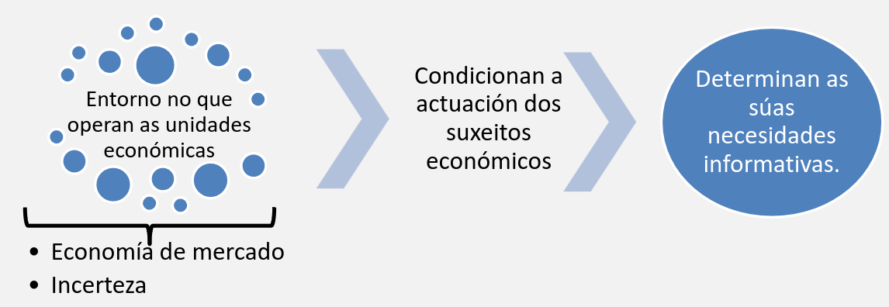
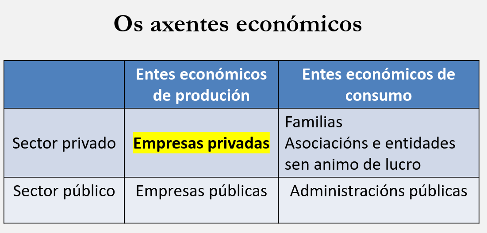

XEFE · curso 2
3. La Información Financiera como Base para la toma de Decisiones.
Nota
Lo importante de este tema son preguntas tipo test de teoria
Saber hacer un ejercicio tipo nómina Saber bastante sobre la amortización y calcular cuanto se amortiza un bien cada periodo
3.1 La necesidad de información Financiera
La actividad económica da lugar a la existencia de múltiples y complejas relaciones entre los distintos sujetos o entidades económicas. Como esta actividad económica se desenvuelve en un entorno de incertidumbre los agentes económicos necesitan la información financiera que les permita disminuir la incertidumbre existente para la toma de decisiones.

3.2 La contabilidad
La contabilidad es el sistema de información contable. Es el instrumento apropiado para informar sobre la actividad económica que realizan los agentes económicos a las distintas partes relacionadas con los mismos.
Los trabajadores son usuarios externos a la empresa. Tienen una relación contractual con la empresa, pero no intervienen en la toma de decisiones.
3.3 Los agentes económicos

3.4 El Patrimonio
El patrimonio es el conjunto de bienes, derechos y obligaciones debidamente valorado que posee una unidad económica. Este conjunto le permite cubrir sus necesidades o llevar a cabo su actividad productiva. Se trata de un concepto estático, ya que muestra la situación financiera de la empresa en un momento determinado.
3.4.1 Componentes del Patrimonio
El patrimonio se compone de tres elementos fundamentales:
Bienes: Son los elementos materiales que la empresa utiliza en su actividad. Pueden ser de uso (como edificios o maquinaria), de transformación (como las materias primas) o destinados a la venta (productos terminados o mercancías).
Derechos: Representan situaciones jurídicas favorables para la empresa, como el derecho a cobrar una deuda o recibir un servicio. Generalmente se traducen en cobros monetarios.
Obligaciones: Son compromisos que la empresa tiene con terceros y que implican la entrega de dinero, bienes o servicios. Suelen cancelarse mediante pagos en efectivo, aunque también pueden saldarse con otros bienes o servicios.
3.4.2 Clasificación del Patrimonio
Desde el punto de vista contable, el patrimonio se clasifica en:
Activo (A): Conjunto de recursos controlados por la empresa como consecuencia de hechos pasados. Tienen la capacidad de generar beneficios económicos en el futuro, ya sea por su uso o por su venta, y deben tener una valoración económica fiable.
El activo se divide en dos tipos:
-
Activo corriente: Son aquellos bienes y derechos que se espera que se conviertan en dinero, se consuman o se vendan en un plazo inferior a un año. Por ejemplo: el dinero en caja, las materias primas o los productos listos para la venta.
-
Activo no corriente: Incluye aquellos elementos que permanecerán en la empresa durante más de un año y se utilizan de forma duradera en su actividad. Ejemplos: edificios, maquinaria o vehículos.
Pasivo (P): Son las deudas y obligaciones actuales de la empresa, derivadas también de hechos pasados, cuya cancelación implicará la salida de recursos. También se pueden clasificar en pasivo corriente (a corto plazo) y pasivo no corriente (a largo plazo).
3.4.3 El Patrimonio Neto y la Ecuación Patrimonial
El patrimonio neto (PN) es la parte residual del patrimonio que pertenece a los propietarios de la empresa una vez deducidas todas las obligaciones. Es decir, se obtiene restando el pasivo al activo. También puede denominarse, de forma más general, simplemente como "patrimonio".
Las fórmulas que lo expresan son:
- Bienes + Derechos – Obligaciones = Patrimonio Neto
- Activo – Pasivo = Patrimonio Neto
De aquí surge la llamada ecuación patrimonial:
Activo = Pasivo + Patrimonio Neto
Esta fórmula refleja que todos los bienes y derechos que posee una empresa están financiados, por una parte, con dinero ajeno (pasivo) y, por otra, con aportaciones de los propietarios (patrimonio neto).
3.4.4 El Balance de Situación
El balance de situación es un documento que recoge toda esta información de forma estructurada y que las empresas elaboran en una fecha determinada. Clasifica los elementos patrimoniales en masas (activo, pasivo y patrimonio neto) y permite conocer la situación económica y financiera de la empresa.
Los elementos del activo se ordenan según su grado de liquidez, es decir, la facilidad con la que pueden convertirse en dinero. Los del pasivo se ordenan según su exigibilidad, es decir, la prioridad con la que deben ser pagados en caso de que la empresa cierre.
En caso de quiebra, se designa a un liquidador que transforma los activos en dinero para pagar las deudas. Si queda algún excedente tras cumplir con todas las obligaciones, este se reparte entre los propietarios de la empresa.
3.5 La Renta o Resultado Empresarial
La renta en contabilidad representa el resultado del proceso productivo de una empresa durante un período de tiempo. Es decir, muestra si la empresa ha ganado o perdido dinero en ese intervalo.
Este resultado puede ser:
- Beneficio (ganancia) si los ingresos son mayores que los gastos.
- Pérdida si los gastos superan a los ingresos.
La renta se calcula así:
Renta = Ingresos – Gastos
A diferencia del patrimonio, que es un concepto estático (mide la situación financiera en un momento concreto), la renta es un concepto dinámico, ya que mide lo que ocurre a lo largo de un periodo (normalmente un año contable o ejercicio económico).
En contabilidad, se trabaja con flujos reales de actividad (es decir, ingresos y gastos), no con movimientos de dinero (cobros y pagos). Por tanto:
- Ingreso ≠ Cobro: Un ingreso es cuando se genera un derecho a cobrar (aunque no se haya recibido el dinero todavía).
- Gasto ≠ Pago: Un gasto es cuando se reconoce una obligación o se consume un recurso (aunque no se haya pagado aún).
Por ejemplo:
- Si vendes algo a crédito, tienes un ingreso, aunque todavía no hayas cobrado.
- Si compras mercancía a pagar en 30 días, tienes un gasto, aunque aún no hayas pagado.
3.6 Componentes del Resultado (Renta)
Para calcular correctamente el resultado de una empresa, hay que tener en cuenta dos tipos de elementos:
Ingresos
Son aumentos del patrimonio neto de la empresa durante el ejercicio económico. Pueden producirse por:
- Aumento del valor de los activos (como ventas realizadas).
- Disminución de pasivos (como la cancelación de una deuda).
Importante: Estos incrementos no deben proceder de aportaciones realizadas por los socios.
Gastos
Son reducciones del patrimonio neto durante el ejercicio. Pueden darse por:
- Disminución del valor de los activos (como consumo de materias primas).
- Aumento de pasivos (como asumir una deuda nueva).
Importante: Estos descensos no deben deberse a distribuciones de beneficios a los socios.
3.7 El Método Contable
El método contable es el sistema que se utiliza para registrar, medir, valorar y comunicar los hechos económicos que afectan al patrimonio de una empresa. A través de este método se garantiza que la información financiera esté bien organizada, sea comprensible y útil para la toma de decisiones.
3.7.1 ¿Qué es un Hecho Contable?
Un hecho contable es cualquier evento económico que provoca un cambio en el patrimonio de la empresa, es decir, que afecta a sus bienes, derechos, obligaciones o al patrimonio neto.
Ejemplos de hechos contables:
- Compra de mercancías
- Venta de productos
- Pago de nóminas
- Recepción de una factura de luz
- Préstamo recibido
Importante:
No todo lo que ocurre es un hecho contable. Solo lo será cuando afecte económicamente al patrimonio de la empresa y pueda valorarse en dinero.
Ejemplo: Si sube el precio de la luz, aún no hay un hecho contable. Pero cuando llega la factura, ya sí, porque entonces hay un gasto concreto que se puede medir y registrar.
3.7.2 Principio de Dualidad
Este principio es clave:
Todo hecho contable afecta al menos a dos elementos del patrimonio. Por tanto, cualquier cambio debe reflejarse en dos cuentas como mínimo, manteniendo siempre el equilibrio de la ecuación contable:
Activo = Pasivo + Patrimonio Neto
Ejemplos:
-
Compra de un local al contado
- Aumenta el activo (inmueble)
- Disminuye el activo (dinero en caja)
-
Compra de un local a crédito
- Aumenta el activo (inmueble)
- Aumenta el pasivo (deuda con proveedor)
Esto es lo que se conoce como el doble efecto o "doble partida", y es el fundamento del método contable.
3.7.3 Medición y Valoración
- Medición: Es asignar un valor numérico a un hecho contable (por ejemplo, cuántas unidades o qué cantidad).
- Valoración: Es expresar esa medición en dinero, para que se pueda registrar contablemente.
Todo hecho contable debe ser medido y valorado, siguiendo criterios objetivos.
Ejemplos:
- La compra de mercancía se valora al precio de compra.
- El servicio prestado se valora al precio acordado con el cliente.
El valor puede variar según el tipo de activo o gasto (no es lo mismo un ordenador que se usa durante 5 años, que un paquete de folios que se consume en un día).
3.7.4 ¿Cómo se Registran los Hechos Contables? (Cuentas T)
El sistema de cuentas T es la forma básica de registrar contablemente cada operación.
Cada cuenta tiene dos partes:
- Debe (izquierda)
- Haber (derecha)
La forma de registrar depende del tipo de cuenta:
| Tipo de cuenta | Aumenta en... | Disminuye en... |
|---|---|---|
| Activo | Debe | Haber |
| Pasivo | Haber | Debe |
| Patrimonio Neto | Haber | Debe |
| Ingresos | Haber | — |
| Gastos | Debe | — |
Ejemplo: Si pagas una factura de luz por 190€:
- Gasto (electricidad) → se registra en el Debe
- Dinero en caja (activo) → se registra en el Haber
3.7.5 Cierre y Saldo de Cuentas
El saldo es la diferencia entre la suma del Debe y la suma del Haber en una cuenta. Dependiendo de cuál de las dos sumas sea mayor, el saldo puede ser:
-
Saldo Deudor:
Cuando la suma del Debe es mayor que la del Haber
→ -
Saldo Acreedor:
Cuando la suma del Haber es mayor que la del Debe
→ -
Saldo Cero:
Cuando ambas sumas son iguales
→
Ejemplo:
Una cuenta de “Caja” ha tenido estos movimientos:
- Ingresos: 2.000 € (Debe)
- Pagos: 500 € (Haber)
Entonces, el saldo es:
2.000−500=1.5002.000 - 500 = 1.500 € → Saldo deudor
Al final del ejercicio, todas las cuentas se cierran. Cerrar una cuenta significa dejarla con saldo cero. Para ello:
- Se calcula el saldo.
- Se introduce un apunte en el lado contrario al que tiene menos suma, igualando las cantidades.
- Esta diferencia se traslada al siguiente ejercicio o se integra en los estados financieros.
3.7.6 Libros Contables
Una vez registrados los hechos contables, deben pasar a dos libros oficiales:
- Libro Diario: Recoge todos los asientos contables por orden cronológico, uno detrás de otro, con sus fechas, cuentas implicadas y cantidades.
- Libro Mayor: Recoge los movimientos clasificados por cuenta. Aquí puedes ver cuánto ha variado, por ejemplo, la cuenta "Caja" o la cuenta "Proveedores" durante el año.
3.7.7 Ejemplos Prácticos
- Compra de un local valorado en 200.000 € al contado
- Inmuebles (Activo) → +200.000 (Debe)
- Caja o Banco (Activo) → –200.000 (Haber)
- Venta de un servicio por 300 € y cobro inmediato
- Caja (Activo) → +300 (Debe)
- Ingresos por servicios → +300 (Haber)
- Recibo de teléfono de 190 €, aún no pagado
- Gastos de teléfono → +190 (Debe)
- Acreedores (Pasivo) → +190 (Haber)
3.7.8 Agregación y Comunicación de la Información
Cuando todas las cuentas han sido cerradas, los datos se agregan para elaborar los estados financieros principales:
- Balance de Situación: Refleja el patrimonio (activo, pasivo y patrimonio neto) en una fecha concreta.
- Cuenta de Pérdidas y Ganancias: Muestra los ingresos y gastos del ejercicio, y por tanto, el resultado (beneficio o pérdida).
Estos documentos se usan para comunicar la situación económica de la empresa a socios, inversores, bancos, administración pública, etc.
3.7.9 Distribución del Resultado
Una vez calculado el resultado del ejercicio:
-
Si hay beneficio, puede:
- Repartirse entre los socios (como dividendos).
- Quedarse en la empresa (como reservas o remanente), para reforzar su patrimonio.
-
Si hay pérdida, se registra como un resultado negativo y:
- Se resta al patrimonio neto.
- Puede acumularse como "pérdidas de ejercicios anteriores", hasta que en futuros años se compensen con beneficios.
3.8 Amortización
La amortización representa la pérdida sistemática de valor que sufren los activos no corrientes (como maquinaria, edificios, vehículos…) debido al uso, al paso del tiempo o a su obsolescencia.
¿Por qué se amortiza?
Porque estos activos no pierden su valor de golpe, sino poco a poco mientras se usan. La empresa consume los beneficios económicos que esos activos generan, por lo tanto:
- Se reduce el valor en libros del activo (es decir, su valor contable en el balance).
- Esta pérdida de valor se registra como un gasto de amortización en la cuenta de resultados del ejercicio correspondiente.
- La amortización no implica una salida de dinero, es solo un ajuste contable.
Cómo se aplica: Método lineal de amortización
: Valor inicial del activo : Valor residual (lo que valdrá al final de su vida útil) : Vida útil del activo (en años)
Aunque hay otros métodos, el método lineal es el más común y fácil de aplicar: reparte el coste de forma uniforme durante la vida útil.
Ejemplo: Empresa PICOPACO SA Compra: Una máquina excavadora
- Valor inicial: 50.000 €
- Valor residual: 2.000 €
- Vida útil: 10 años
Tabla de evolución del activo:
| Año | Valor inicial | Amortización acumulada | Valor neto (contable) |
|---|---|---|---|
| X1 | 50.000 € | 4.800 € | 45.200 € |
| X2 | 50.000 € | 9.600 € | 40.400 € |
| X3 | 50.000 € | 14.400 € | 35.600 € |
| ... | ... | ... | ... |
| X10 | 50.000 € | 48.000 € | 2.000 € |
| La cuenta "Amortización acumulada" es una cuenta compensadora de activo: está en el activo, pero resta valor. | |||
| El valor neto es el valor contable del activo en el balance (valor inicial – amortización acumulada). |
Registro contable
Año 1: Compra del activo (1 de enero):
- Debe: Maquinaria 50.000 €
- Haber: Bancos 50.000 €
Gasto de amortización (31 de diciembre):
- Debe: Amortización del inmovilizado material 4.800 € (gasto)
- Haber: Amortización acumulada del inmovilizado material 4.800 € (activo compensador)
Esto se repite cada año durante la vida útil del activo.
Cómo aparece en el balance
Balance a 31/12/X1:
Activo no corriente
- Maquinaria: 50.000 €
- (-) Amortización acumulada: 4.800 €
- Valor neto: 45.200 €
Los balances posteriores reflejan cómo disminuye el valor neto del activo año tras año, mientras crece la amortización acumulada.
La amortización no es un pago real, solo una anotación contable. Cada tipo de inmovilizado tiene su propia cuenta de amortización acumulada. En la cuenta de resultados, el gasto por amortización se recoge de forma global.
La Agencia Tributaria establece unos coeficientes máximos y mínimos que las empresas pueden usar. Muchas empresas prefieren amortizar en el menor plazo posible para deducirse más gasto cuanto antes. Es habitual que las empresas consideren un valor residual de cero, por simplicidad.